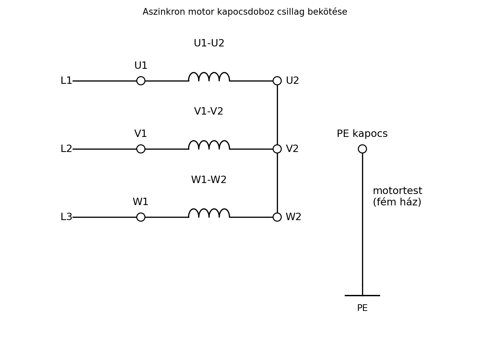

Statikus változat (mint a PDF-ben)
Egy háromfázisú aszinkron motort kell bekötni a műhelyben, például egy új szellőzőventilátor hajtásához, majd először feszültség alá helyezni. A motor kapocsdoboza hat kivezetést tartalmaz, és az adattáblán szereplő feszültségjelölés dönti el, hogy csillagba vagy deltába kössük. Ha a szerelő ezt ellenőrzés nélkül, rossz kapcsolással köti be, a tekercsek túlfeszültséget kapnak vagy a motor nem indul el. Ha a szigetelési ellenállás mérését kihagyja, egy nedves vagy sérült szigetelésű motor bekapcsoláskor zárlatot okozhat, leégetheti a tekercset, vagy a védőberendezést is tönkreteheti. Ha a forgásirányt nem ellenőrzi, a ventilátor visszafelé forog, és a gép nem látja el a feladatát. Ez az alfejezet lépésről lépésre megmutatja a biztonságos ellenőrzést, a helyes bekötést és az első indítást.
A motor kapocsdobozának hat kivezetését a következő kapcsolási rajz szemlélteti csillagkapcsolásban. A tekercsek kezdetei (U1, V1, W1) a hálózati fázisokra csatlakoznak, a végeit (U2, V2, W2) közösítjük; ez a közös pont a csillagpont, amely szigetelt marad.

A kapocsdobozban U1, V1, W1 jelöli a tekercsek kezdeteit, U2, V2, W2 pedig a végeit. Csillagkapcsolásnál a három végpontot kötjük össze, és a három kezdőpontra adjuk a hálózati fázisokat. Deltakapcsolásnál U1–W2, V1–U2, W1–V2 hidakat rakunk fel. A pontos kapcsolási logika a Kapocsdoboz, csillag–delta bekötés és forgásirány alfejezetben található.
A valóságos kapocsdobozban a hat kivezetés egy szigetelő kapocstáblán, csapszegeken ül: az egyik sorban U1, V1, W1, a másikban eltolva W2, U2, V2 (MSZ EN 60034-8; a sorrend a gyártótól függően fordított is lehet, a párosítás a lényeg). Az alábbi ábrán levett fedéllel láthatók a részek: a ház (1) és a tömítéses fedél (2), a kapocstábla (3) a csapszegekkel (4), a kapocshidak (5, itt csillagban), a tábla alatt bekötött tekercskivezetések (6), a belső PE-kapocs (7), a tápkábelt tömítő és rögzítő kábeltömszelence (8) és a nem használt nyílás vakdugója (9).
A tápkábel három fázisere a tekercskezdetekre (U1, V1, W1), a zöld-sárga ér a belső PE-kapocsra kerül; nullavezető nincs. Figyeljünk arra, hogy a kábel köpenye a tömszelencén belül végződjön, és a nem használt nyílásban vakdugó legyen, különben a fedél tömítése hiába ép. A HTML-kiadásban a részekre mutatva kiemelődnek, a hidak, az erek és a fedél rétegenként ki-be kapcsolhatók.
A motor bekötése előtt három alapvető mérést kell elvégezni feszültségmentes állapotban:
Ezek a mérések nem csak „papírmunkát” jelentenek: egy-egy hibás érték utalhat nedvességre, szennyeződésre, szakadt tekercsre vagy menetzárlatra.
Definíció. A szigetelési ellenállás a tekercsek és a motor teste, valamint a különböző fázistekercsek közötti szigetelőanyag egyenáramú ellenállása.
A méréshez szigetelésvizsgáló műszert (köznyelvben „megger”) használunk, amely kisfeszültségű gépeknél általában 500 V egyenfeszültséget kapcsol a vizsgált pontokra. A mérés előtt a motort feszültségmentesíteni kell. A test felé mért értékhez a hat tekercskivezetést összekötjük, és a közös pont és a test között mérünk; fázisonkénti méréshez a hidakat levesszük (lásd a feladatgyűjteménybeli (41.1) gyakorlati útmutató 4. lépését).
Szabály. Kisfeszültségű motoroknál a tekercs és a test közötti szigetelési ellenállásnak legalább 1 MΩ-nak kell lennie (ellenőrizendő: aktuális szabvány és gyártói adatlap). Új vagy száraz, egészséges szigetelésű motornál a mért érték általában 100 MΩ feletti. Ha az érték 0,5 és 1 MΩ közé esik, a motor valószínűleg nedves vagy a szigetelés öregszik; ilyenkor szárítás vagy felújítás szükséges. 0,5 MΩ alatt a motort tilos bekapcsolni.
Definíció. A tekercsellenállás a fázistekercsek egyenáramú ellenállása, amelyet milliohm-mérővel vagy hídkapcsolású műszerrel mérünk. A három fázisnak közel azonosnak kell lennie.
A mérést feszültségmentes állapotban, a kapocsdoboz kivezetésein végezzük. Csillag kapcsolásnál a mérést a kezdetek és a csillagpont között, delta kapcsolásnál pedig a vonali kapcsok között végezhetjük; az értékeléshez mindig az adott kapcsolásnak megfelelően kell számolni.
Szabály. A fázistekercsek ellenállása közötti eltérés általában ne haladja meg a 2–3%-ot (ellenőrizendő: gyártói adatlap). Nagyobb aszimmetria szakadt vagy menetzárlatos tekercsre utalhat.
A szigetelésmérés után a műszer (vagy rövidre zárással mi) kisüti a tekercset; csak ezután nyúlunk a kapcsokhoz. A V és a W tekercset ugyanígy, a többit a testhez kötve mérjük. A HTML-kiadásban a két mérés vezetékei rétegként kapcsolhatók, a részekre mutatva a bekötés magyarázata jelenik meg.
A bekötés előtt mindig olvassuk le az adattáblát. Az adattábla például 230/400 V Δ/Y jelölést tartalmaz, ami azt jelenti, hogy a tekercs 230 V feszültségre készült; 400 V-os hálózaton ezért csillagba kell kötni. Ha az adattábla 400/690 V Δ/Y, a motor 400 V-os hálózaton deltába kötendő. A helytelen kapcsolás túlfeszültséget ad a tekercsekre, ami gyors túlmelegedéshez és szigetelés-károsodáshoz vezet.
A kapocstáblán a kapcsolási módot a hidak helyzete adja, ahogy az alábbi ábra mutatja: (a) csillagban a felső sor három csapszegét (W2, U2, V2) két vízszintes híd köti össze; (b) deltában három függőleges híd kerül fel (U1–W2, V1–U2, W1–V2); (c) hibás, ha egy 230/400 V Δ/Y adattáblájú motort 400 V-os hálózaton deltába kötünk.
A táp mindhárom esetben ugyanoda, az U1, V1, W1 kapcsokra jut; csak a hidak helye változik. A hidakat mindig az adattábla alapján, feszültségmentes motoron helyezzük át, és a (c) esetet a bekapcsolás előtti ellenőrzésnél kell kiszűrni. A HTML-kiadásban a három eset egyenként lapozható.
Javításból vagy tekercselésből visszakapott motornál előfordul, hogy a hat kivezetés jelöletlen. Bekötés előtt a tekercspárokat és a tekercskezdeteket azonosítani kell: egy fordítva bekötött tekercs erős zúgást, nagy, aszimmetrikus áramot és melegedést okoz. A módszert, a mérőkapcsolást és magyarázatát a Kapocsdoboz, csillag–delta bekötés és forgásirány alfejezet tanítja; itt a beüzemelési gyakorlat ellenőrzőlistája következik.
Biztonsági korlát. Csak törpefeszültségű, biztonsági (leválasztó) transzformátoros forrással, oktatói felügyelettel; a tekercsekre ehhez a módszerhez hálózati feszültséget kapcsolni tilos. Előtte az öt szabály: (1) lekapcsolás, (2) visszakapcsolás elleni biztosítás, (3) a feszültségmentesség ellenőrzése, (4) földelés és rövidre zárás, ha indokolt, (5) a szomszédos feszültség alatti részek lefedése. A tápkábel és a hidak leszerelve, a tengely szabad.
Alternatívaként telepes, egyenáramú impulzusos polaritásvizsgálat is használható (4,5–9 V-os telep rövid kapcsolása egy tekercsre, a másikon középállású mV-mérő kitérésének iránya). Korlátja, hogy az előjel értelmezése könnyen eltéveszthető, ezért ismert jelölésű motoron ellenőrizni kell. A bekötési rajzot a Tekercselés, impregnálás, csapágyak és szénkefe alfejezet mérési ábrája (feladatgyűjtemény, 29.2) mutatja.
| Lépés | Mérés | Mért érték (kitöltendő) | Megfelel, ha |
|---|---|---|---|
| 1 | A–A’ / B–B’ / C–C’ ellenállása | ……… / ……… / ……… Ω | a három érték közel azonos |
| 2a | A gerjesztve, B–C’ feszültsége | ……… V | egyértelműen nem nulla |
| 2b | B gerjesztve, A–C’ feszültsége | ……… V | egyértelműen nem nulla |
| 3 | üresjárati áramok L1 / L2 / L3 | ……… / ……… / ……… A | eltérés 10 % alatt |
Miután a mérések rendben vannak, és a kapcsolás megfelelő, elvégezhető az első indítás. Ezt lehetőleg üres tengellyel, terhelés nélkül végezzük, hogy a motor áramfelvételét és forgásirányát biztonságosan ellenőrizhessük.
Az első indítás lépései:
Forgásirány. A háromfázisú aszinkron motor forgásiránya a fázissorrendtől függ. L1–L2–L3 sorrend esetén a motor az egyik irányba forog; ha a sorrendet L1–L3–L2-re változtatjuk, a forgásirány megfordul. A gyakorlatban ezt úgy érjük el, hogy két tápvezetéket felcserélünk. A forgásirány ellenőrzéséhez elegendő egy rövid pillanatnyi bekapcsolás, de csak akkor, ha a motor terheletlen, és a környezet biztonságos.
Ha nem egyértelmű, hol kell a két fázist felcserélni, a Fázissorrend, forgó mező és feszültségesés a vezetékben alfejezet „fázissorrend és forgásirány ellenőrzése” útmutatójának döntési fáját kövesd.
A fázissorrend a bekapcsolás előtt is ellenőrizhető, így a próbaindítás csak megerősítés. Az alábbi ábra (a) része a hálózati fázissorrend-mutatót mutatja a motorvédő bemeneti (1-3-5) kapcsain – ez feszültség alatti mérés, csak jogosult személy végezheti CAT III műszerrel. A (b) rész egy feszültségmentes módszer: ha a műszer tud ilyen üzemmódot, a mérőzsinórokat a motor U1, V1, W1 kapcsaira tesszük, a tengelyt kézzel megforgatjuk, és a műszer kijelzi, melyik tápsorrendnél forogna a motor a kívánt irányba. A (c) rész a javítást mutatja: leválasztás és feszültségmentesség-ellenőrzés után két tápér (itt L1 és L2) helyet cserél.

A kívánt forgásirányt a hajtott gép adja meg (nyíl a gépen vagy a ventilátorházon); a csere mindig a tápereken történik, a tekercsek hídjaihoz nem nyúlunk. A HTML-kiadásban a három lépés egyenként lapozható.
Az üresjárati áramot mindhárom fázisban lakatfogóval mérjük. Az áramoknak közel azonosnak kell lenniük; nagy eltérés tekercshibára vagy fázishibára utal. Az üresjárati áram nagysága motoronként eltérő, de tapasztalati ökölszabály szerint a névleges áram 25–40%-a körül alakul (ellenőrizendő: gyártói adatlap). Ez az érték a motor terhelés nélküli veszteségeit és a mágnesező áramot tükrözi; a pontos érték a motor típusától függ.
Hőkioldó beállítása. A motor túlterhelés elleni védelmére hőkioldót vagy motorvédő kapcsolót használunk. Közvetlen indításnál a hőkioldót a motor névleges áramára állítjuk, például 8,2 A-re. Csillag–delta indításnál a hőkioldó elhelyezésétől függően a fázisáram alapján kell beállítani, ami a vonali áram -ad része; erről részletesen az Indítás: közvetlen, csillag–delta, lágyindító, csúszógyűrűs és a Csillag–delta indítás vezérlése alfejezetekben olvashatsz. A pontos beállítást mindig a gyártói adatlap és a kapcsolási rajz alapján kell elvégezni.
Szabvány. A motorok bekötésére, vizsgálatára és védelmére vonatkozó követelményeket elsősorban az MSZ EN 60034 sorozat (villamos gépek), az MSZ EN 60204-1 (gépek villamos berendezései) és az MSZ EN 60947-4-1 (motorvédők és mágneskapcsolók) rögzíti (ellenőrizendő: aktuális szabványkiadások). A szigetelési ellenállás mérésének módszerét és a minimális elfogadási értékeket a gyártói adatlapok és a géprendszerre vonatkozó előírások adják meg. A mérési jegyzőkönyvnek tartalmaznia kell a mért értékeket, a műszer azonosítóját, a dátumot és a vizsgáló személy aláírását.
Egy üzemcsarnokban új elszívóventilátort szereltek. A szerelő a motort bekötötte, elindította, a motor szépen forgott, ezért úgy gondolta, minden rendben van. Azonban a ventilátor nem szállított levegőt, és a csarnokban gyorsan melegedett a levegő. A hiba oka az volt, hogy a motor rossz irányba forgott, mert a fázissorrend nem volt megfelelő. A forgásirány ellenőrzését kihagyták. A javítás egyszerű volt: feszültségmentesítés után két fázist felcseréltek, és a ventilátor a helyes irányba kezdett forogni. A tanulság: az első indításnál mindig ellenőrizni kell a forgásirányt – lehetőleg még a végleges terhelés rákapcsolása előtt.
Egy másik esetben egy régi, nedves pincéből kiszerelt motort mérés nélkül kapcsoltak be. A szigetelési ellenállás 0,3 MΩ volt, de ezt senki nem mérte meg. Az indítás után a tekercs zárlatos lett, a kismegszakító leoldott, és a motor javíthatatlanná vált. A szigetelésmérés itt megelőzhette volna a kárt.
Szigetelésmérés elhagyása. Ha a motor nedves vagy szennyezett, a szigetelési ellenállás alacsony, és az indítás zárlatot okozhat. Mindig mérjünk szigetelési ellenállást, és csak akkor indítsuk a motort, ha az érték megfelelő.
Rossz kapcsolási mód választása. Az adattábla 230/400 V Δ/Y jelölését összekeverik, és 400 V-os hálózaton deltába kötik a motort. A tekercsek 400 V-ot kapnak 230 V helyett, ami gyors túlmelegedést és szigetelésromlást okoz. A kapcsolási módot mindig az adattáblával egyeztetni kell.
Forgásirány ellenőrzésének elhagyása. A motor jól forog, ezért a szerelő nem törődik a forgásiránnyal. A gép azonban rossz irányba működik, ami a berendezés károsodásához vezethet. Az első indításnál mindig ellenőrizni kell a forgásirányt.
Hőkioldó helytelen beállítása. Ha a hőkioldót a motor névleges áramánál magasabbra állítják, a motor túlterhelés esetén leég. Ha alacsonyabbra, a hőkioldó tévesen leold. A beállítást a motor névleges áramának megfelelően kell elvégezni.
A védővezető elhagyása. A motor teste feszültség alá kerülhet hiba esetén, és áramütést okozhat. A védővezetőt mindig csatlakoztatni kell, és folytonosságát ellenőrizni kell.
Gyakorlás: ennek az alfejezetnek a kidolgozott példái, gyakorlatai és megoldással ellátott feladatai az Összefoglaló feladatgyűjtemény villanyszerelő tanulóknak című kötet 41.1 szakaszában találhatók.
A motor kapocsbekötése előtt mindig feszültségmentesíteni kell, és el kell végezni a három alapvető mérést: szigetelési ellenállás (min. 1 MΩ, 500 V DC-vel), tekercsellenállás (a fázisok közötti eltérés max. 2–3%), és az adattábla kapcsolási módjának egyeztetése. Csillagkapcsolásnál a tekercsek végeit közösítjük, deltakapcsolásnál U1–W2, V1–U2, W1–V2 hidakat rakunk fel. A forgásirány a fázissorrendtől függ; ha rossz irányba forog, két tápvezetéket kell felcserélni. Az első indítást üres tengellyel végezzük, mérjük az üresjárati áramot (a névleges 25–40%-a), és a hőkioldót a motor névleges áramára állítjuk. A mérési eredményeket dokumentálni kell. Továbbvitt eredmény. Az itt elvégzett motor beüzemelés és a mért értékek dokumentálása alapján építhető fel a teljes motorvezérlés a Vezérlések építése: direkt, reverzáló, Y-Δ alfejezetben.
A kapocsdobozos csillag–delta kapcsolás logikája és a forgásirányváltás elve stabil elektrotechnikai alapismeret. A szigetelési ellenállás minimális értékére (1 MΩ), a tekercsellenállás megengedett aszimmetriájára (2–3%) és az üresjárati áram arányára (25–40%) vonatkozó számok gyakorlati ökölszabályok, amelyeket a mindenkori gyártói adatlapok és a hatályos szabványok pontosíthatnak. A konkrét szabványszámok: MSZ EN 60034 sorozat, MSZ EN 60204-1, MSZ EN 60947-4-1 (ellenőrizendő: aktuális kiadások és a rájuk vonatkozó határértékek). A mérési gyakorlatot mindig a műszerek gyártói utasítása szerint kell végrehajtani.